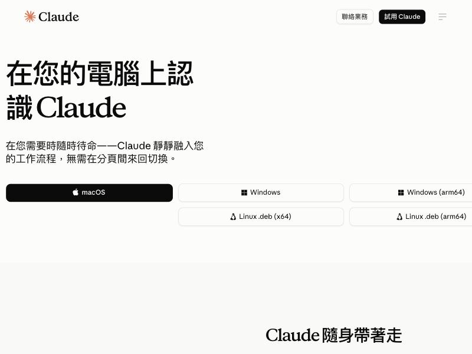
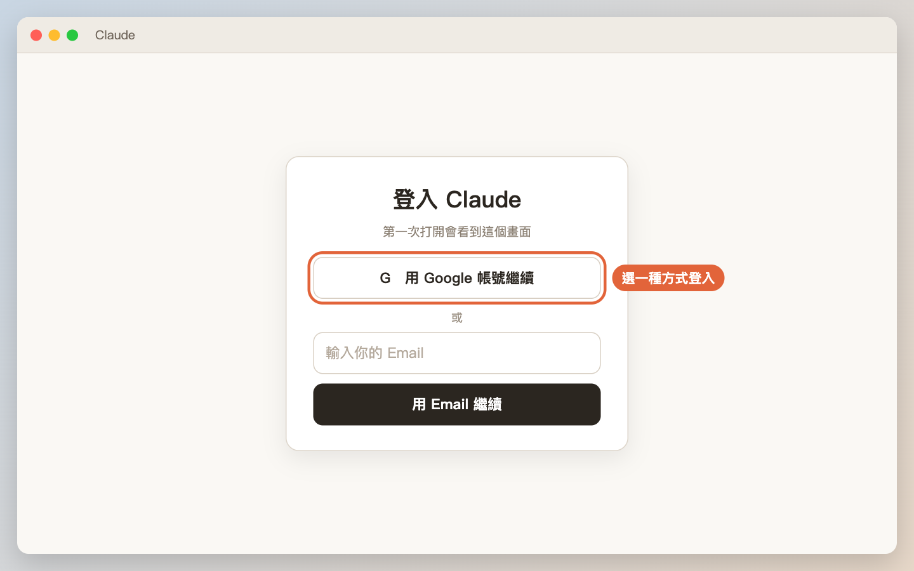
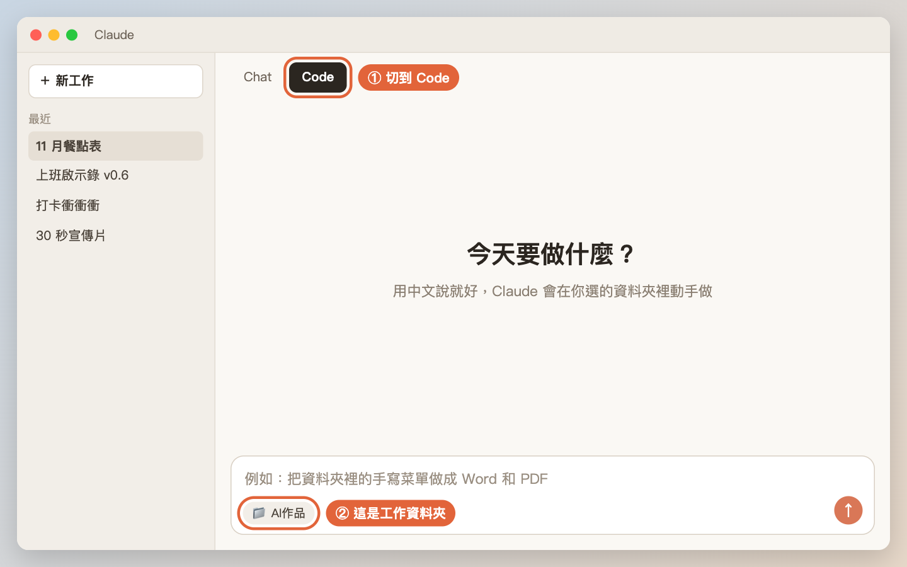
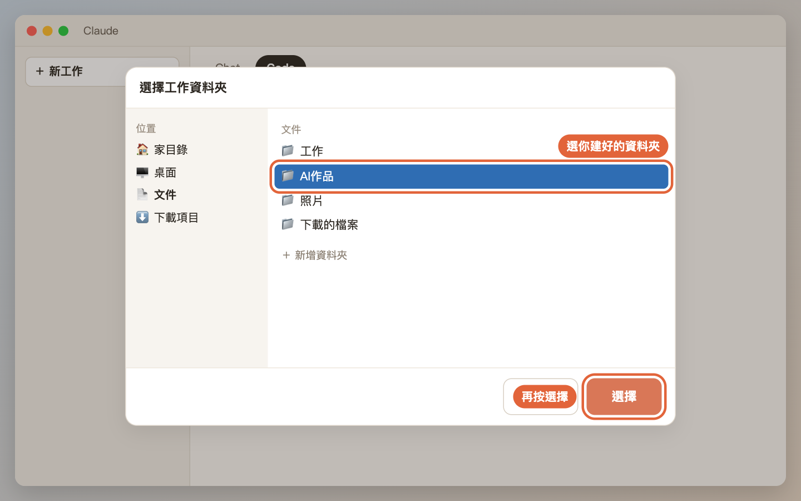
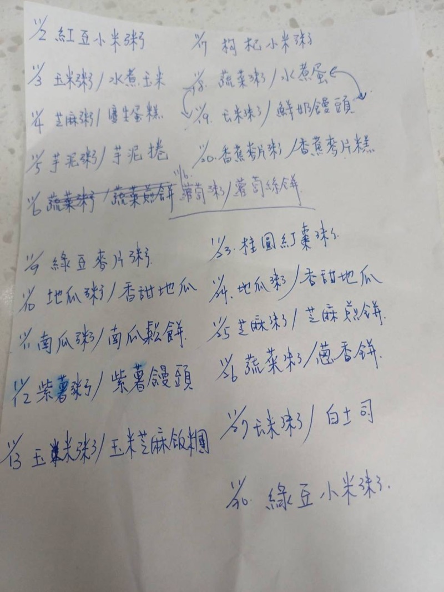
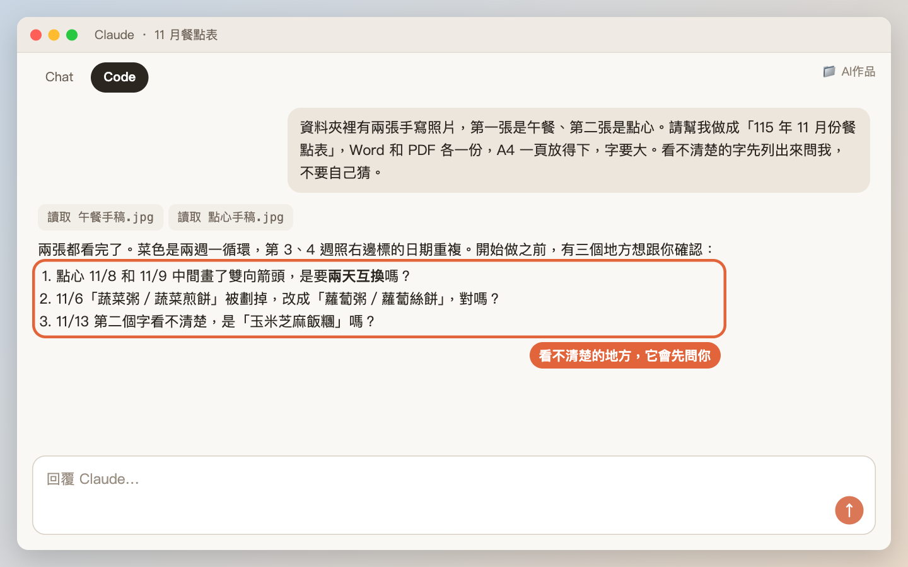
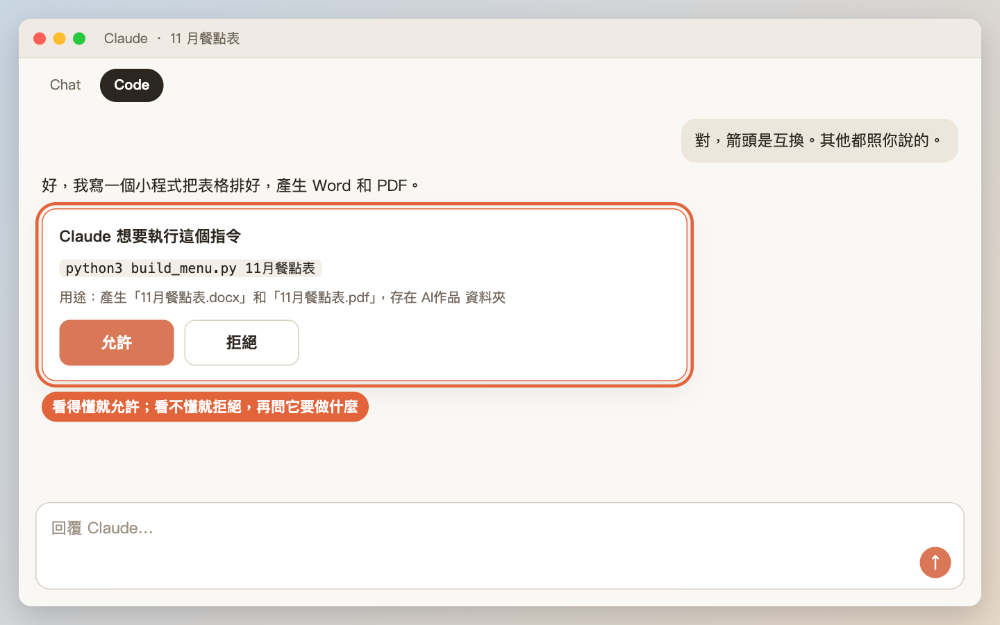

安裝 Claude，把手寫餐點表變成 Word 和 PDF
從下載、登入、選資料夾，到送出第一則中文訊息。用真實例子：托育中心每個月的手寫菜單，變成可以直接列印的餐點表。
本課步驟（9 步）
常見卡關 · 影片大綱- 下載、安裝、登入 Claude 桌面版
- 打開 Code 分頁、選一個工作資料夾
- 用中文送出第一個任務，看懂 Claude 跳出來的「可以嗎？」詢問
- 看成品、請它修改，下個月再做一次
下載 Claude 桌面版
用瀏覽器打開 claude.ai/download，Mac 按「macOS」，Windows 按「Windows」。

Code 分頁需要 Claude 的付費方案（Pro 或更高）。方案和價格常常調整，以官網顯示為準。
安裝並登入
- Mac：打開下載的檔案，把 Claude 拖到「應用程式」資料夾，再從應用程式打開。
- Windows：雙擊下載的安裝檔，照畫面按下一步。
第一次打開會請你登入。用 Email 或 Google 帳號都可以，登入一律在 Claude 自己的視窗或官方網頁完成。

切到 Code 分頁
登入後切到 Code 分頁（位置看下面的示意圖）。這個分頁的 Claude 可以在資料夾裡開檔、存檔、執行程式。

選一個工作資料夾
Claude 只會在你選的資料夾裡做事。建議先在電腦裡建一個專用資料夾，例如「文件／AI 作品」，以後每個作品在裡面開一個子資料夾。
這位作者的做法：所有作品放在同一個大資料夾，裡面分成 office-apocalypse（遊戲）、office-reel（宣傳片）、餐點表素材（餐點表）……一個作品一個資料夾，找東西很方便。

把材料放進資料夾
這次的材料是兩張手寫稿照片：一張午餐、一張點心。用手機拍好，存進剛剛選的資料夾。

用中文送出第一個任務
在輸入框打字，像在 LINE 上交代同事一樣講清楚就好：要做什麼、給誰看、格式、有什麼要注意。
資料夾裡有兩張手寫照片，第一張是午餐、第二張是點心。請幫我做成「115 年 11 月份餐點表」，Word 和 PDF 各一份，A4 一頁放得下，字要大、印出來看得清楚。看不清楚的字先列出來問我，不要自己猜。
最後一句很重要：手寫字 AI 也會看錯，請它把不確定的字列出來問你，比事後一格一格檢查輕鬆。

看懂「可以嗎？」的詢問
Claude 要執行程式、改檔案、上網之前，可能會跳出詢問讓你按允許或拒絕。判斷方法很簡單：
| 它要做的事 | 怎麼辦 |
|---|---|
| 讀你資料夾裡的檔案、在資料夾裡存新檔 | 允許 |
| 執行它剛寫好的程式（例如產生 Word） | 允許 |
| 寄信、發文、上傳到網路、刪除東西 | 先看清楚內容，不確定就按拒絕，再問它「這是要做什麼？」 |

看成品，說哪裡要改
下個月再做一次，越做越快
做過一次之後，Claude 會把規則記下來（雙週循環、哪一欄是重複日期、字型、配色），也把整個流程寫成一鍵產出的小程式。之後每個月只要：
這是 12 月的兩張手稿，照之前的格式做餐點表。
想讓 Claude 記住你的習慣，可以直接說「記住：以後餐點表都用蘋方字型」。它會寫進記憶，下次開新對話也會照做。
找不到 Code 分頁：確認 Claude 是最新版，而且帳號是付費方案。免費帳號看不到。
Claude 說「找不到照片」：照片沒有放進你選的那個資料夾。可以直接把照片拖進對話框，或請它告訴你資料夾在哪裡。
手寫字被讀錯：一定要請它「不確定的字列出來問我」。真實案例裡，箭頭對調、劃掉重寫的地方最容易出錯。
Word 在別台電腦打開字型跑掉：請它指定一個對方電腦也有的字型，並且同時給 PDF，PDF 在哪台電腦打開都一樣。
一直跳出詢問很煩：看得懂的（讀檔、存檔、執行它自己寫的程式）就允許。看不懂就拒絕，再問它「你要做什麼？」，它會解釋。
| 鏡頭 | 畫面 | 旁白重點 |
|---|---|---|
| 1 | 手寫稿照片 → 成品 PDF 對照 | 「今天把這張手寫菜單，變成這份可以印的餐點表。」 |
| 2 | claude.ai/download 頁面，按 macOS | 去官網下載，Code 分頁需要付費方案 |
| 3 | 安裝、登入（Email 打碼） | 登入一律在官方視窗，不要把密碼打在對話裡 |
| 4 | 切到 Code 分頁、選資料夾 | Claude 只在你選的資料夾裡做事；一個作品一個資料夾 |
| 5 | 把照片丟進資料夾 | 材料放進資料夾，Claude 才看得到 |
| 6 | 打字送出範例訊息（放大字幕） | 講清楚：做什麼、格式、看不清楚的字先問我 |
| 7 | 權限詢問跳窗，滑鼠停在允許 | 讀檔、存檔、執行可以允許；寄信、上傳、刪除要看清楚 |
| 8 | Claude 列出看不清楚的字，你回答 | 讓它問你，比事後一格一格檢查輕鬆 |
| 9 | 打開 Word／PDF，說「字太小」，改好再看一次 | 不滿意就直接說，像跟同事講話 |
| 10 | 下個月只說一句話就做好 | 做過一次，下次越來越快 |